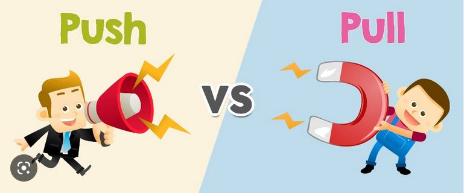

Qu'est ce que le node js ?
Node.js est un environnement d’exécution pour travailler sur un programme écrit en JavaScript. Il a été créé en 2009 par Ryan Dahl. Depuis 2009, de nombreuses versions de nodejs ont été développé et depuis mars 2021 la version 15 de NodeJS a été instauré.
Node est devenu une référence pour les développeurs JavaScript. Il est de plus en utilisé par les développeurs.
Node.js est très fréquemment utilisé côté serveur.
Le principe de NodeJS est d’exécuter et de traiter des projets / applications JS côté serveur et non côté client .
Le code s’exécute côté serveur comme en PHP. On utilise HTTP pour accéder à son application JS.
Architecture de Node :
Node n’est pas construit 100 % JavaScript. Une partie de la plateforme NodeJs est en C++ pour offrir de meilleures performances.
V8 et Libuv composent Node. V8 est le moteur d’exécution JavaScript de Google que l’on retrouve sur Chrome. Il va exécuter le code en Javascript en back-end.
Sans ce moteur d’exécution JS, Node serait incapable de comprendre et d’exécuter le moindre code JS.
Libuv s'oocupe libuv du réseau, des échanges avec le système, et de la gestion des fichiers.
Node s'utilise notamment dès que l'on a besoin de traitement des nombreuses données nécessitant de nombreuses interactions / échanges avec un SGBD.
Il présente de nombreux avantages par rapport aux autres langages comme le PHP. La vitesse de performance est beaucoup plus rapide.
JavaScript est un langage de développement complet, ce qui signifie qu’il est capable de développer une application web ou mobile entière sans autre technologie que JS contrairement au PHP.
Un code écrit en Node.js s’exécute rapidement et sans problème ; il maintient les charges de travail du serveur à un niveau faible.
Node.js est le framework côté serveur le plus populaire. Node.js possède un gestionnaire de paquets intégré appelé NPM (Node Package Manager) qui est le plus grand catalogue de logiciels au monde (650 000 paquets de code libre).

Il existe deux méthodes de veille : méthode pull et push
La méthode « PULL » : c’est l’approche la plus classique, l’utilisateur se rend directement et régulièrement sur internet pour en «tirer» les informations les plus récentes dans un domaineparticulier en utilisant des moteurs de recherche, des métamoteurs, des annuaires, des signets depages web à revisiter ou des pages de liens (sitographie).
La méthode pull permet au chercheur de sélectionner lui-même l’information.
L’information recueillie est donc plus pertinente et le chercheur ne risque pas d’être noyé sous un flot d’informations trop volumineux.
Cependant, elle comporte beaucoup d’inconvénients puisque le chercheur doit se rendre sur les sites web et relancer manuellement la recherche. Cette méthode nécessite donc beaucoup detemps et d’efforts. Le chercheur doit être assidu dans sa recherche puisqu’il n’utilise pas un servicede signalement rapide.
Il doit relancer sa recherche régulièrement s’il désire effectuer une veilledocumentaire efficace et représentative des développements dans son domaine. De plus Il n’y apas de mise en avant de l’information et de sa nouveauté.
Mais ce système n’existe pas pour toutes les bases de données et le chercheur se doit de créerdes stratégies de recherche efficaces afin d’éviter d’obtenir un flot d’informations trop volumineux si par exemple ses critères ne sont pas assez précis.
Avec la méthode « PUSH », l'information est « poussée » de manière automatique vers l’utilisateuren fonction de ses préférences et de ses critères en utilisant des flux RSS , des alertes parcourriel, des listes de diffusion, des logiciels de surveillance de pages web ou des abonnements àun centre de documentation.
Le chercheur n’effectue ainsi plus de recherche et se contente d’évaluer l’information. Les résultats de la recherche sont envoyés directement dans la boîte de courriel ou l'agrégateur du chercheur.L’avantage est que cela permet une économie de temps puisque le processus est automatisé.Enfin, la recherche s’effectue de façon périodique et régulière ce qui assure une veilledocumentaire continue.
Utilisation avec la méthode push avec des flux RSS :
Google Alert
Feeder